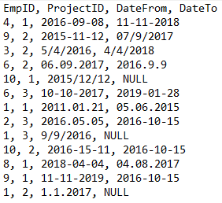
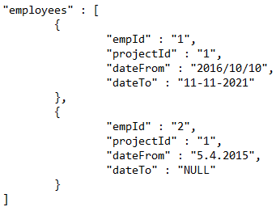

Find the longest collaboration of a pair of employees on the same project
Employees list will be filtered if all these requirements are met:
- Must has .txt, .csv or .json file extension;
- Must be valid file structure depends on the file extension;
- Must contains 'EmpID', 'ProjectID', 'DateFrom', 'DateTo' columns/fields;
- Fields 'EmpID', 'ProjectID' and 'DateFrom' fields are mandatory while 'DateTo' column is optional;
- Fields 'EmpID' and 'ProjectID' must be a whole number (integer) greater than 0;
- Fields 'DateFrom' and 'DateTo' must be date with standard format. As example: 2020-11-02;
- Minimum list size is between 2 and 512;
CSV and TXT file example
JSON file example
